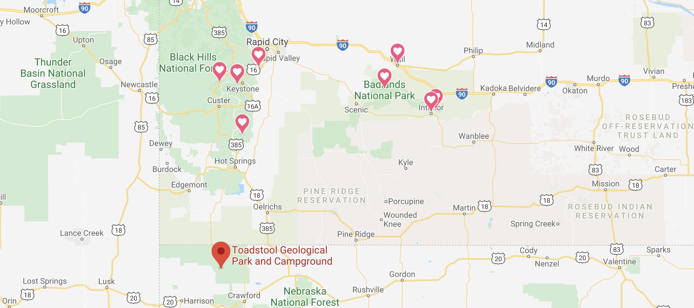

Camping Vacation: South Dakota, July, 2018
Black Hills National Forest, South Dakota
My family and I drove 2 days to Rafter J Bar Ranch in Hill City, South Dakota, where we camped for three nights. We toured the caverns in Wind Cave National Park where we marveled at the rare cave formations called boxwork. We swung by and checked out Mount Rushmore National Memorial, which was pretty cool. We drove through Custer State Park and checked out the views. We went up near Rapid City and drove through a wildlife park called Bear Country U.S.A. where we saw lots of wildlife, including lots and lots of black bears.

Ogala National Grassland, Nebraska
Before our next major destination, we took a day trip down to the Ogala National Grassland in Nebraska. There, we made a day out of hiking around Toadstool Geological Park. The park's namesake mushroom-shaped formations were pretty marvelous.

{kind=link}
{kind=link}
{kind=link}
{kind=link}
Badlands National Park, South Dakota
Our final destination was Badlands National Park, east of Rapid City, S.D. This park looks like a vast desert wasteland, and it is quite beautiful to behold. We camped for 5 nights at the Badlands National Park Campground. Not only did we hike a few trails in the Badlands, but we also visited some other sites as well. We visited well-known Wall Drug store in Wall, S.D. where we did some shopping and had some photo-ops with the kids. We checked out the only fourth of July fireworks around at Interior, S.D., which proved to be "acceptable" but on the slim side. We celebrated our last day by having wine and cheese at the end of Badlands Notch Trail.
{kind=link}
{kind=link}
{kind=link}